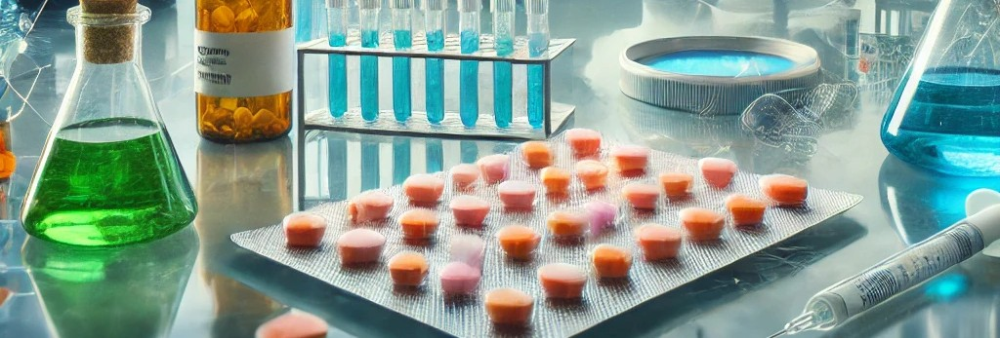
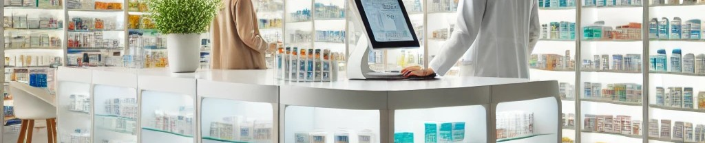
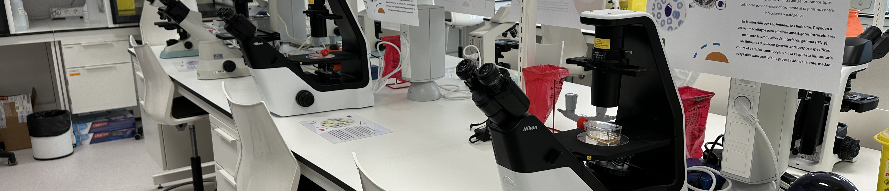
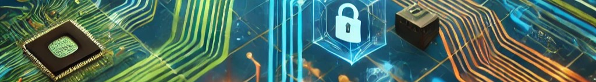
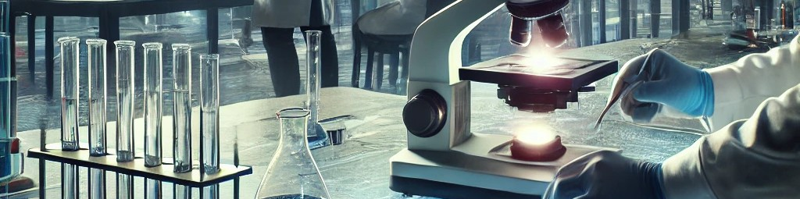

我的工作经历：在药学与生物技术中的职业探索
在我的学术和职业生涯中，我有幸将药学与生物技术的知识相结合。这两门学科对我的成长起到了关键作用，使我在科研、药房实践和实验室工作中掌握了核心技能。这些宝贵的经历构成了我职业发展的重要基础
"纸上得来终觉浅，绝知此事要躬行。"
—— 陆游《冬夜读书示子聿》
药房实习：患者关怀与管理的坚实根基
在Gema Pérez Sánchez药房实习期间，我全面参与了药学服务的各个方面，包括药品的发放、治疗方案的跟踪与优化、个性化剂量的制备，以及库存管理和药品有效期的监督。这些实践为我积累了宝贵的经验。
这段经历让我在与患者沟通方面有了很大进步，能够清楚地帮助他们理解治疗方案，提高用药的依从性。同时，这段实习也让我学会了更好地组织工作，并增强了在快节奏的临床环境中应对压力的能力。
实验室经历：科研探索
作为圣帕布洛CEU大学免疫学研究小组的学生，这段经历成为我职业生涯中最宝贵的经历之一。在此期间，我参与了对Vero、RAW和Leishmania sp等细胞系的研究，积累了在细胞培养、冷冻保存与复苏，以及药物对不同细胞模型毒性分析方面的实践经验。
这段经历让我能够运用先进的研究方法，评估天然和合成化合物的效果，为开发更高效的治疗方法做出贡献。同时，我在实验项目管理、数据分析和跨学科团队合作方面得到了很大的提升。
数字大使经历：推动学术数字化变革
作为CEU数字大使计划(CEU Digital Embassy)的一员，我有幸参与并推动了圣帕布洛CEU大学的数字化转型工作。
在这一过程中，我组织并实施了一系列活动，重点包括开发Blackboard Ultra等平台的使用教程，以及设计简化教学和学习流程的教育资源。
此外，我还参与了多个技术工具的设计与开发项目，例如在线机器人，并与工程师及跨学科团队紧密合作，共同推进项目实施。。
领导数字教学团队的经历让我充分发挥了组织和协调能力，同时也在国内外层面推动了协作式学习的深化与发展。
这段经历不仅让我提升了技术能力，还增强了我在创新项目管理以及与不同受众高效沟通方面的能力。
作为数字大使，我为构建更加现代化和互联化的学术环境贡献了自己的力量，这让我倍感自豪，同时也激励我持续追求创新与不断进步。
未来展望：迈向卓越，拥抱创新
我的目标是继续在临床药学和科学研究领域不断进步，利用我在药学和生物技术方面的知识，开发创新的解决方案，解决当前的健康问题。通过在实验室和药房的实践经验，我已经为在这两个领域做出贡献做好了充分的准备。
这些经历不仅塑造了我的职业生涯，也坚定了我在健康和科研领域不断追求进步、力求产生积极影响的信念。
"研究的意义在于看到所有人都看见的事物，却能思考别人未曾想到的东西。"
—— 阿尔伯特·爱因斯坦